Hidde & Tessie · stand 10 okt
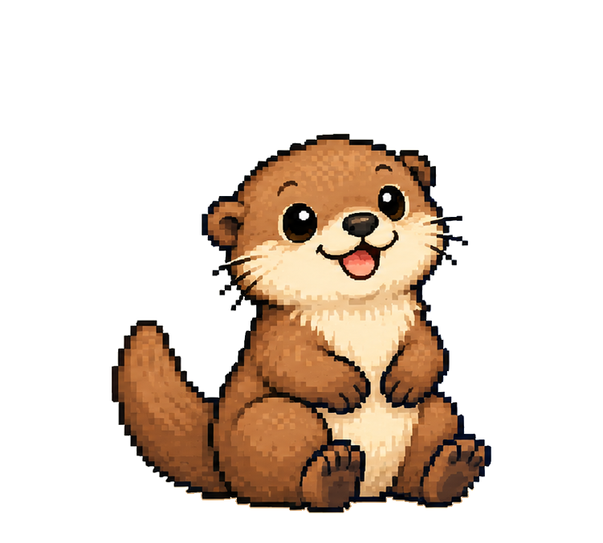
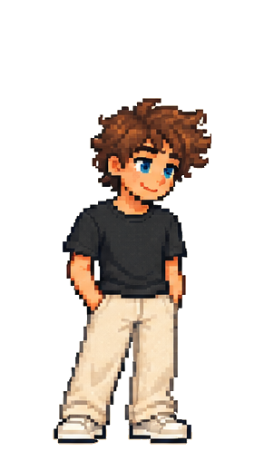
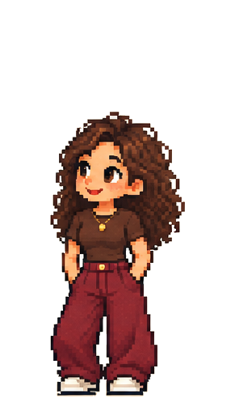
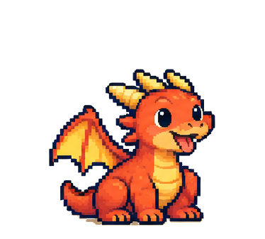
Werk in uitvoering. De figuren en de kledingkast staan. Het app-ontwerp is gecontroleerd en vereenvoudigd (versie 2). Volgende stap: jullie keuzes, daarna de eerste echte versie.
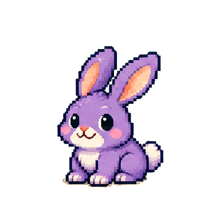
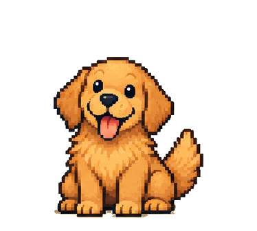
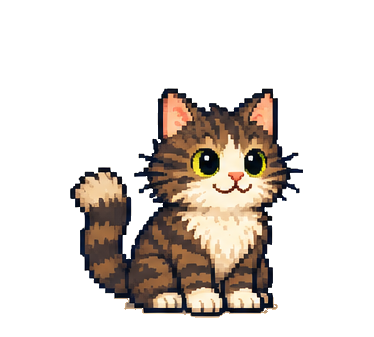
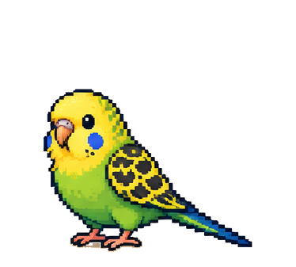
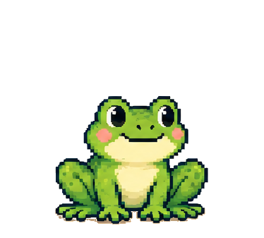
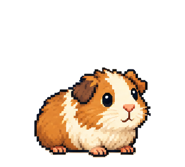
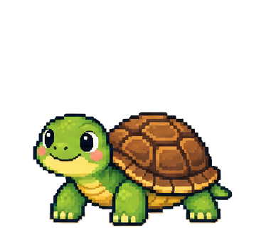
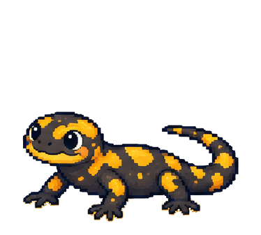
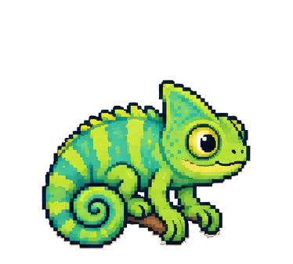
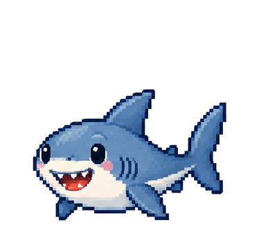
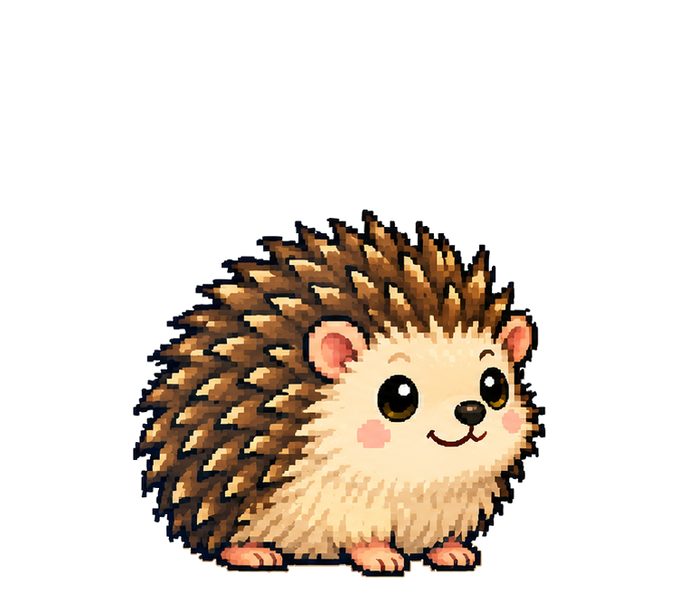
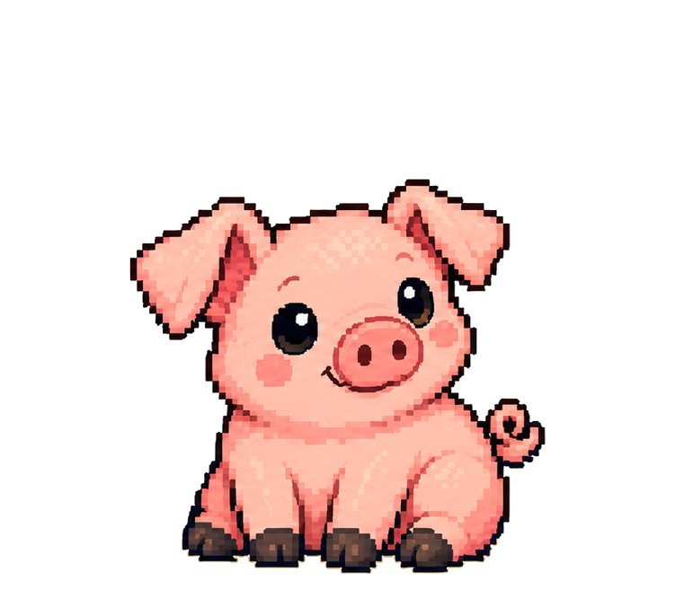
Niets is overgetekend behalve vier voorbeeldaccessoires (petje, bril, kroontje, sjaal). Die zijn in de kledingkast gemarkeerd.
Taken in een open lijst. Je pakt een taak op of wijst hem toe. Elke taak heeft één eigenaar. Plannen en bijhouden (boodschappenlijst, afspraken maken) zijn gewone terugkerende taken, dus dat onzichtbare werk telt mee.
Punten naar moeite. Een taak is waard: minuten × (1 + 0,3 × zwaarte). Jullie stellen die waarde samen vast.
Eén gezamenlijk weekdoel. Bovenaan staat bijvoorbeeld "Samen 420 van 600". Geen percentages per persoon, geen winnaar. Een bedankje geeft geen punten, wel een blij pet.
Pets groeien mee. Je reeks loopt door als jullie samen 80% van het weekdoel halen. Bij ziekte gaat het doel omlaag en er is één rustweek per maand. Pets gaan nooit dood.
Winkel komt later. Dan komen er munten in één gedeelde huispot, voor outfits en accessoires. Echte uitjes, zoals een date night, worden gezamenlijke mijlpalen.
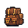
Zondag samen terugkijken. De week wordt in woorden beschreven. Ieder geeft privé een cijfer van 1 tot 5 voor hoe eerlijk het voelde.
Jullie hebben één huis, en dat groeit. Je begint in een starthuisje met een woonkeuken en slaaphoek. Elke verbouwing koop je uit de gedeelde huispot. Er verdwijnt nooit iets, en meubels blijven staan waar jullie ze neerzetten.
Van starthuisje naar villa (voorstel): badkamer 400 → slaapkamer 600 → tuin 700 → leefkeuken met kookeiland 900 → eerste verdieping 1.500 → gevelrenovatie naar modern 1.800 → mastersuite 1.600 → overdekt terras 1.400 → villa met zwembad en carport 3.000 (na een half jaar weekdoelen). Samen ongeveer 40 weken volle huispot. Kijk bij Ons huis → Verbouwen.
Taken in huis: een taak die bijna moet geeft een glinster bij het meubel, een vraagteken als hij aan de beurt is. Nooit rommel en nooit een boos pet. Afvinken geeft sterretjes.
Nog tijdelijk: de meubels zijn blokvormen en muren en daken zijn in code getekend. Met een meubelblad in jullie stijl worden ze vanzelf vervangen.
Echt licht. Het huis volgt de echte zon in jullie stad: dageraad, ochtend, middag, gouden uur, schemering en nacht. Lampen gaan vanzelf aan.
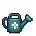
Echt weer. Helder, bewolkt, regen of sneeuw, met druppels op het raam en sneeuw op het dak. Op deze telefoonpagina kies je het weer zelf; de echte app haalt het straks via jullie server.
Seizoenen. Bloesem in de lente, oranje blad in de herfst, kale bomen en rijp in de winter.
Sinterklaas en Kerst. Een schoen met wortel en pepernoten, een kerstboom met lampjes en lichtjes aan de gevel. Bij regen trekken jullie vanzelf je regenjas aan, als je die hebt.
Een web-app op Hiddes VPS die je op het beginscherm zet, zodat Tessie geen SideStore nodig heeft. De server houdt de punten bij, wijzigingen verschijnen direct bij de ander, en offline afvinken wordt later gesynchroniseerd. Er wordt pas uitgerold na een week proefdraaien.
De belangrijkste negen. De volledige lijst (23) staat in het app-ontwerp.
Gemaakt van de goedgekeurde Pixel Quest-bladen. Bronbestanden en documenten staan in Documenten\hidde_tessie_app.